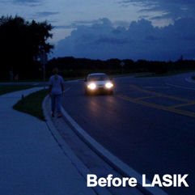
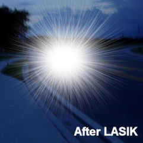
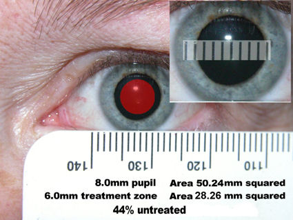
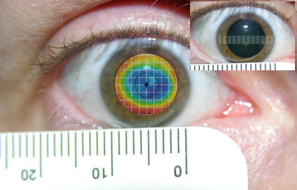
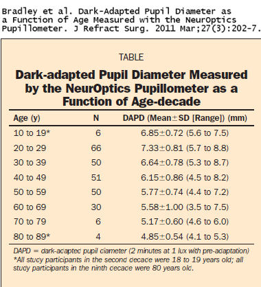
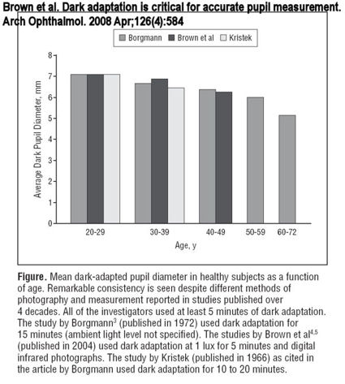

На рисунке слева внизу показано, как человек, носящий корректирующие линзы, видит пешехода и встречный автомобиль в темное время суток. На рисунке справа внизу показано, как человек, носящий корректирующие линзы, видит пешехода и встречный автомобиль в темное время суток. Пациент с расширенными зрачками, перенесший операцию LASIK возможно, вы увидите ту же сцену (обратите внимание, что пешехода заслоняет яркий свет фар). Смотрите больше изображений на проблемы с ночным зрением после операции LASIK Индустрия LASIK использует термин "ослепительный свет" для описания вспышек звезд, наблюдаемых пациентами LASIK.


Пациенты с большими зрачками не являются подходящими кандидатами для LASIK. После LASIK пациенты с большими зрачками могут страдать от постоянных, изнуряющих зрительных аберраций (звездочки, ореолы, множественные изображения) и потери контрастной чувствительности (неспособности видеть мелкие детали) в ночное время. Как правило, чем больше несоответствие между оптической зоной лазера или эффективной оптической зоной и максимальным диаметром зрачка, адаптированного к темноте, тем серьезнее нарушения ночного зрения. Индустрия LASIK и хирурги LASIK стараются скрыть важность размера зрачка с момента появления LASIK, чтобы максимально увеличить число потенциальных кандидатов и защитить хирургов LASIK от судебных исков.
Пациенты, которые испытывают постоянные проблемы с ночным зрением или другие осложнения после операции LASIK, которые негативно влияют на качество жизни, должны отправьте отчет о медицинском наблюдении с Управлением по санитарному надзору за качеством пищевых продуктов и медикаментов в режиме онлайн. Кроме того, вы можете позвонить в Управление по санитарному надзору за качеством пищевых продуктов и медикаментов по телефону 1-800-FDA-1088, чтобы сообщить об этом по телефону. бумажный бланк и либо отправьте его по факсу на номер 1-800-FDA-0178, либо отправьте по почте на адрес, указанный внизу страницы 3, либо загрузите Мобильное приложение MedWatcher для сообщения о проблемах с LASIK в FDA с помощью смартфона или планшета. Ознакомьтесь с образцом Отчеты о травмах, полученных с помощью LASIK в настоящее время находится на рассмотрении в FDA.
Пациенты с осложнениями LASIK могут пройти присоединяйтесь к обсуждению на FaceBook
LASIK и большие зрачки: клинический случай №1

Эта фотография была сделана в темноте, когда пациентка прижимала миллиметровую линейку к нижнему веку. Программа для редактирования фотографий была использована для наведения линейки на зрачок и создания изображения-вставки, которое подтверждает, что в темноте ее зрачки составляют 8 мм. Ей была проведена обработка оптической зоны диаметром 6 мм с использованием лазера VISX S2 (без наложения) на величину -4,25 диоптрий. Линейка на изображении была использована для создания красной области, которая представляет оптическую зону диаметром 6 мм. Ночью свет проходит через 8 мм ее роговицы, 44% которой полностью не обработаны. У этого пациента ухудшается зрение в ночное время из-за сильных звездных вспышек, ореолов, множественных изображений, нечеткого зрения и потери контрастной чувствительности, которые невозможно исправить с помощью очков.
LASIK и большие зрачки: клинический случай №2

Диаметр зрачка этого пациента, измеренный в темноте, составил более 8 мм. Пациентку лечили от -6,5 до -1,75 (миопия средней степени тяжести с астигматизмом) с помощью аппарата VISX S4 с оптической зоной 5,5 x 6 мм и растушевкой до 8 мм. Это изображение было создано с помощью программного обеспечения для редактирования фотографий с использованием отсканированного изображения топографии роговицы пациентки. Рельеф был изменен в нужном масштабе с помощью линий топографической сетки и линейки на фотографии. Затем рельеф был обрезан и наклеен поверх зрачка. Это изображение демонстрирует изменения преломляющей способности роговицы в зависимости от диаметра зрачка пациента, что приводит к проблемам с ночным зрением, таким как ореолы, звездочки, двоение в глазах и потеря контрастности.
Размер зрачка и метод LASIK
Управление по санитарному надзору за качеством пищевых продуктов и медикаментов разместило на своем сайте LASIK предупреждения о размере зрачка: Контрольный список операций LASIK и Когда ЛАЗЕРНАЯ терапия не для меня?
В медицинской литературе имеется множество свидетельств, подтверждающих важность размера зрачка в рефракционной хирургии. С некоторыми ключевыми медицинскими исследованиями, подтверждающими важность размера зрачка в LASIK, можно ознакомиться по этой ссылке: Роль размера зрачка в LASIK
Американская академия офтальмологии (AAO), Американское общество катарактальной и рефракционной хирургии (ASCRS), Федеральная торговая комиссия (FTC), Управление по контролю за продуктами и лекарствами (FDA) и Офтальмологическая компания взаимного страхования (OMIC) опубликовали заявления относительно размера зрачка в рефракционной хирургии. Отраслевые и нормативные рекомендации по размеру зрачка
Веб-сайт клиники Майо предупреждает, что пациенты с расширенными зрачками после операции LASIK могут испытывать такие изнурительные симптомы, как блики, ореолы, звездочки и призрачные изображения. Статья из клиники Майо
Известный хирург LASIK рассказывает о важности размера зрачка при проведении скрининга LASIK
Пациент LASIK Стив Пост рассказывает о своем судебном процессе по поводу увеличения размера зрачка (начало в 3:53)
Насколько велик large?
Нам часто задают вопрос: "Насколько велик зрачок?" Размер относителен. При рассмотрении размера зрачка в практике LASIK зрачок считается большим, если диаметр зрачка при слабом освещении превышает диаметр оптической зоны лазера. Например, зрачок диаметром 6,0 мм является большим по сравнению с оптической зоной лазера размером 5,0 мм, но не по сравнению с оптической зоной 6,5 мм. В современных методах LASIK с оптической зоной 6,5 мм диаметр зрачка, превышающий 6,5 мм, считается "большим". У пациентов с астигматизмом важным параметром, который следует учитывать, является малая ось зрачка. И ЗОНЫ СМЕШИВАНИЯ НЕ В СЧЕТ!
Обычно пациентам с LASIK ложно сообщают, что они получили большой " ;; зона обработки ". Мы слышали от многих пациентов, прошедших процедуру LASIK, что они считают, что им была увеличена оптическая зона LASIK на 7 мм или 7,5 мм (или даже больше). Наиболее оптические зоны с современными методами LASIK они составляют 6 мм или 6,5 мм. Полный диаметр процедуры включает в себя зона смешивания.(Некоторые эксимерные лазеры раннего поколения не имели зон наложения). Обычно используется зона наложения толщиной 8 мм. Но в зоне наложения не выполняется коррекция рефракции. Назначение зоны растушевки заключается в уменьшении интенсивности лазерного воздействия, чтобы уменьшить резкий переход от оптической зоны к необработанному участку роговицы. Для полной коррекции предназначена только оптическая зона. Если зрачок расширяется за пределы оптической зоны в зону смешивания или за ее пределы, пациент будет видеть такие аберрации, как взрывы звезд , ореолы , и призрачные образы , и контрастная чувствительность будет снижена.
Почему бы им просто не предоставить каждому пациенту оптическую зону размером с его зрачки? Чем шире оптическая зона, тем больше ткани роговицы удаляется. Если удалить слишком много ткани, у пациента, скорее всего, разовьется эктазия после операции LASIK По этой причине пациенты с большими зрачками не являются хорошими кандидатами для проведения LASIK. Но вместо того, чтобы ставить интересы пациента на первое место и отказывать пациентам с большими зрачками, хирурги LASIK стараются скрыть это и отрицают важность размера зрачка, чтобы максимально увеличить число потенциальных кандидатов на LASIK.
Как мне узнать диаметр моей оптической зоны? По следующей ссылке вы сможете ознакомиться с отчетом об операции, составленным из записей реального пациента LASIK. Просмотр оперативного отчета . Данные, обведенные красным кружком, означают диаметр лазерного воздействия. В данном примере пациенту была проведена процедура LASIK для лечения близорукости и астигматизма. Термин "цилиндр" используется для описания астигматизма. Диаметр астигматической коррекции этого пациента, выполненной в форме эллипса, составляет 6,5 мм х 5,00 мм с увеличением до 8 мм. Этому пациенту, вероятно, сказали, что он /она получил "зону обработки" диаметром 8 мм; однако, когда зрачки пациента расширяются более чем на 5 мм (малая ось эллиптической оптической зоны), он / она, скорее всего, увидит зрительные отклонения.
Правда о размере зрачка и LASIK
Один из аргументов, который пациенты слышат от специалистов LASIK-industrial complex, заключается в том, что размер зрачка сам по себе не позволяет предсказать, у кого будут наблюдаться нарушения ночного зрения. На самом деле здесь задействованы два фактора - размер зрачка и оптическая зона лазера. Несоответствие размера зрачка и оптической зоны, называемое “ отрицательный зазор "это результат того, что эффективная оптическая зона в ночное время меньше максимального диаметра зрачка. Пациент никогда не должен соглашаться на операцию, если полностью обработанная область меньше, чем зрачок, адаптированный к темноте. Хирурги, проводящие операцию LASIK, пытаются внести путаницу, заявляя, что причина нарушений ночного зрения является многофакторной. К факторам, вызывающим нарушения ночного зрения, относятся качество и правильность абляции, остаточная аномалия рефракции и отрицательный зазор . Высокая степень близорукости приводит к уменьшению эффективной оптической зоны, что создает больший отрицательный просвет. Хорошо известно, что все аберрации роговицы увеличиваются с увеличением размера зрачка. Любой, кто говорит, что размер зрачка не является фактором нарушения ночного зрения, неверно информирован или лукавит. Отрицательный клиренс является предотвратимой причиной нарушений ночного зрения при надлежащем обследовании пациентов.
У поставщиков услуг LASIK и представителей отрасли есть финансовый стимул скрывать важность размера зрачка. Если вы видите информацию, которая сводит к минимуму или преуменьшает важность размера зрачка, обратитесь к источнику. Является ли информация, предоставленная хирургом LASIK, финансово заинтересованным в принятии пациентом решения о проведении LASIK? Публикуется ли информация на веб-сайте, который продвигает LASIK или направляет пациентов к хирургам LASIK? Пусть вас не обманывают безрассудные хирурги или поддельные сайты по обучению пациентов, которые преуменьшают важность размера зрачка.
Почему размер зрачка имеет значение?
Зрачок определяет количество света, попадающего в глаз, подобно диафрагме фотоаппарата. Диаметр роговицы, на которую будет произведена полная коррекция с помощью лазера, должен быть не меньше диаметра зрачков пациента при слабом освещении.
Стандартная оптическая зона для операции LASIK составляет 6,0 - 6,5 миллиметров. Использование оптических зон большего размера повышает риск развития осложнений, угрожающих зрению эктазия после операции LASIK . Большинство лазеров не одобрены FDA для оптических зон размером более 6,5 миллиметров. Зона абляции может включать дополнительную зону смешивания, которую не следует учитывать при определении размера эффективной оптической зоны. В 2004 году Нетто и соавт. обнаружили, что адаптированные к темноте размеры зрачков кандидатов на рефракционную хирургию варьируются от 4,3 до 8,9 миллиметров с в среднем 6,5 миллиметров .
В марте 2011 года Брэдли и др. опубликовали следующую таблицу, отражающую адаптацию диаметра зрачка к темноте в зависимости от возраста:

В апреле 2008 года Браун и соавторы опубликовали следующую таблицу размеров зрачков в разбивке по возрасту, основанную на трех исследованиях:

Основываясь на этих результатах, большой процент пациентов должен быть дисквалифицирован для проведения LASIK.
Эффективная оптическая зона (также называемая "функциональной оптической зоной") - это полностью скорректированная область роговицы после заживления, что определяется топографией. При слабом освещении эффективная оптическая зона лазерного воздействия должна охватывать весь диаметр входного зрачка. Если зрачок расширяется больше эффективной оптической зоны, несфокусированные световые лучи будут проходить через роговицу без коррекции, и результирующее изображение будет искаженным. Чем больше разница между эффективной оптической зоной и размером зрачка, тем серьезнее нарушения зрения.
Риск возникновения нарушений зрения в ночное время у пациентов с миопией высокой степени еще более возрастает из-за уменьшения эффективных оптических зон, связанных с более глубокими абляциями. Если зона абляции при лазерном лечении децентрализована, даже эффективная оптическая зона, соответствующая размеру зрачка, может не охватывать весь диаметр зрачка.
Более подробную информацию о корреляции между размером зрачка и нарушениями ночного зрения (сферическими аберрациями) в виде диаграмм можно найти по следующей ссылке:
А как насчет эффекта Стайлза-Кроуфорда?
Светочувствительная ткань, выстилающая заднюю стенку глаза, называется сетчаткой. Сетчатка содержит фоторецепторы, называемые палочками и колбочками. Колбочки работают только при ярком освещении, и на периферии сетчатки их меньше. Палочки доминируют при тусклом освещении и более многочисленны на периферии сетчатки.
В статье "Эффект Стайлза-Кроуфорда", опубликованной в 1933 году, утверждается, что лучи света, попадающие в глаз через центр зрачка, оказывают большее влияние на зрение, чем лучи света, проникающие через края зрачка. Этот принцип применим к колбочкам (дневное зрение), а не к палочкам (ночное зрение).
Многие хирурги, проводящие процедуру LASIK, неверно описывают эффект Стайлза-Кроуфорда, ложно заявляя, что он сводит к минимуму нарушения ночного зрения после процедуры LASIK.
Лео Джей Магуайр, доктор медицинских наук, офтальмолог клиники Майо и бывший консультант FDA:"Проблемы, связанные с аберрацией зрачков, еще больше усугубляются тем фактом, что Эффект Стайлза-Кроуфорда отменяется в режиме ночного видения ."(Источник: Maguire LJ. Кераторефракционная хирургия, успех и общественное здравоохранение. Доктор медицинских наук, офтальмолог, март 1994 15;117(3):394-8.)
Примечание редактора: Действительно, абсурдно, что те же офтальмологи, которые признают "ночную близорукость" у молодых, неоперированных глаз, используют эффект Стайлза-Кроуфорда, чтобы отрицать проблемы ночного зрения, связанные с размером зрачка, после LASIK.
Судебные иски о размере зрачка
Было подано несколько исков о врачебной халатности в рамках программы LASIK, основанных на размере зрачков. К сожалению, эти дела являются сложными для истца из-за фальшивых свидетелей-"экспертов" - наемников защиты, которым платят за дачу ложных показаний о размере зрачков. Настоящий "эксперт" знает, что размер зрачка является критическим фактором качества зрения после операции LASIK. Когда дело о размере зрачка доходит до суда и присяжные видят все доказательства, эти дела могут быть выиграны. Вот два случая с размером зрачка, которые привлекли внимание индустрии LASIK:
Премия в размере 4 миллионов долларов по делу о размере зарплаты ученика
Судебное решение на сумму 3 миллиона долларов по делу о размере заработной платы учащихся
Хирурги, проводящие операцию LASIK, используют лженауку в своей защите от пациентов с большими зрачками, которые подают судебные иски. Важно понимать недостатки в методологии медицинских исследований, опубликованных фальшивыми экспертами. Подробнее:
Руководство по разоблачению экспертов в области обороны, Страница 1 Страница 2
Важность точного измерения зрачка
Измерение зрачков следует проводить в темном помещении, после того как глаза пациента привыкнут к темноте. Это называется "адаптацией к темноте". Подробнее о точных измерениях зрачков читайте в разделе:
www.lasermyeye.org/keratoscoop/columns/lonedog/lonedog11jun2003.html
Джек Холладей, доктор медицинских наук: "Точная пупиллометрия является важной частью обследования при проведении рефракционной хирургии. Учитывая сообщения о появлении ореолов и бликов после рефракционной операции во многих новостных передачах в прайм-тайм, пупиллометрия стала одним из предоперационных тестов, которых ожидают пациенты. Из опубликованных и отдельных сообщений о ночных бликах и ореолах совершенно ясно, что большой зрачок является преобладающим фактором, приводящим к этим проблемам".;
Источник: "Обзор офтальмологии", Том. Добавлено: 09:03, Выпуск: 15.03.02, Высокая стоимость неточной пупиллометрии.
Эффективная оптическая зона (EOZ), также известная как функциональная оптическая зона (FOZ)
Целью LASIK является изменение преломляющей способности глаза путем удаления ткани роговицы с помощью лазера. В связи с риском развития осложнений после LASIK эктазия Таким образом, диаметр роговицы, которая полностью обрабатывается лазером (так называемая оптическая зона), обычно ограничен 6 - 6,5 миллиметрами. Если бы роговица была плоским куском пластика, пациенту, у которого зрачки расширяются в темноте до 6 миллиметров, было бы достаточно 6-миллиметровой процедуры LASIK. Но роговица не плоская и сделана не из пластика. Факторы, которые играют важную роль в формировании эффективной оптической зоны после LASIK, включают реакцию заживления роговицы и " ;; косинусный эффект "или "; функция радиальной компенсации ". Важно знать об этих факторах и о том, как они связаны с нарушениями ночного зрения после операции LASIK. Учить больше:
Цитата: "Еще одним фактором, который следует учитывать при создании центра для проведения кераторефракционных процедур, является расширение зрачков в условиях мезопии или скотопии. Диаметр зрачка может достигать 6-8 мм при недостаточном освещении. Оптическая зона при кераторефракционной процедуре определяется как область центральной части роговицы, которая подвержена изменению рефракции, вызванному хирургическим вмешательством. Существует ограничение на размер оптической зоны при различных кераторефракционных процедурах: 3,0-5,5 мм при радиальной кератотомии и 4,5-8,0 мм при фоторефракционной кератэктомии (ФРК) и лазерном кератомилезисе in situ (LASIK). Когда зрачок расширяется за пределы оптической зоны, лучи света по-разному преломляются в средней и центральной частях роговицы. Эта разница вызывает краевые блики и ореолы вокруг объектов, которые более выражены ночью или в случаях децентрации оптической зоны. У некоторых пациентов с особенно большими зрачками может наблюдаться несоответствие между размером зрачка и диаметром оптической зоны, и их следует предупредить перед операцией о возможном оптическом искажении в условиях мезопии."
Майрон Янофф, доктор медицинских наук, и Джей С. Дукер, доктор медицинских наук. Офтальмология, Третье издание. Мосби Эльзевир, 2009.
Цитата: "При нейро-офтальмологической оценке используется современное видеоаппаратура для пупиллометрии, которая может определять диаметр с точностью до сотых долей миллиметра (36). В рефракционной хирургии оценка диаметра зрачка важна, поскольку, несмотря на превосходную остроту зрения, четко отцентрированную зону абляции, красивую послеоперационную топографическую карту и отсутствие заметного помутнения роговицы, широко расширенные зрачки при низком уровне освещенности подвержены появлению ореолов, бликов и ухудшению ночного зрения, когда в результате абляции происходит абляция. зрачок расширяется до размера, превышающего зону абляции. Эти симптомы следует предвидеть, учитывать и объяснять пациенту, прежде чем принимать решение о проведении рефракционной операции, если измерение размера зрачка при слабом освещении показывает, что он может расшириться до размера, превышающего зону лечения. Таким образом, тщательное измерение скотопического расширения зрачка является неотъемлемой частью предоперационного обследования пациента с рефракцией."
Азар, Д. и Кох, Д. LASIK: Основы, хирургические техники и осложнения (2002, Марсель Деккер)
Цитата: "Измерение размера зрачков стало стандартом медицинской помощи в конце 1990-х годов, когда было замечено, что пациенты с большими зрачками (более 6 мм) имели плохое ночное зрение после [кераторефракционной операции]. Типичными симптомами являются яркий свет, вспышки звезд, ореолы, снижение контрастной чувствительности и ухудшение общего качества зрения. Проблемы с ночным зрением, как правило, возникают у пациентов с большими зрачками и маленькими зонами обработки (6,0 мм или менее). Алгоритмы, используемые в лазерах третьего поколения, включают увеличенные оптические зоны и переходные зоны, что позволяет хирургам выполнять рефракционные процедуры у пациентов с увеличенными зрачками. Эти алгоритмы значительно снижают частоту и тяжесть проблем с ночным зрением. Многие хирурги используют стандартные зоны абляции во время эксимерных процедур. Общепринятая стандартная переходная зона между удаленной и не удаленной роговицей на 0,5-1,0 мм больше зрачка, чтобы свести к минимуму проблемы с ночным зрением. Оптические зоны меньшего размера обычно используются при коррекции миопии высокой степени для сохранения ткани роговицы. У таких пациентов увеличивается частота проблем с ночным зрением из-за несоответствия между размером зрачка и размером оптической зоны. Хотя размер зрачка не влияет на исход операции, как это было раньше, измерение размера зрачка по-прежнему является стандартом предоперационной оценки. Следует выявлять пациентов с очень большими зрачками (8 мм и более). У таких пациентов может быть увеличена сферическая аберрация."
ААО. Клиническая оптика . 2008-2009.
Р. Ваджпаи, Н. Шарма, С. Мелки, Л. Салливан. Пошаговая операция LASIK . 2003, Тейлор и Фрэнсис. (стр. 10). Нажмите на изображение, чтобы увеличить.
Цитата: "Когда зрачок расширяется за пределы оптической зоны, лучи света по-разному преломляются в средней и центральной частях роговицы. Эта разница вызывает краевые блики и ореолы вокруг объектов, которые более выражены ночью или в случаях децентрации оптической зоны. У некоторых пациентов с особенно большими зрачками может наблюдаться несоответствие между размером зрачка и диаметром оптической зоны, и их следует предупредить перед операцией о возможном оптическом искажении в условиях мезопии."
Источник: Майрон Янофф, доктор медицинских наук, и Джей С. Дукер, доктор медицинских наук. Офтальмология, Третье издание Мосби Эльзевир, 2009.
Пациенты с большими зрачками сообщают о нарушении ночного зрения в Управление по санитарному надзору за качеством пищевых продуктов и медикаментов
Пациент сообщил, что после операции lasik, проведенной более года назад, у него появился "эффект ореола", из-за чего ему трудно управлять автомобилем ночью. Пациент заявил, что его заверили, что этот эффект со временем пройдет, но он все еще ощущается. Врач сообщил пациенту, что у него большие зрачки, и это состояние, по мнению репортера, должно было быть учтено врачом перед операцией. Источник
Была проведена операция LASIK в [отредактировано FDA] в [отредактировано FDA] в [отредактировано FDA] 2010 году. После процедуры мое зрение в ночное время было очень затуманенным, с большими ореолами, крупными звездочками и ухудшением зрения при тусклом освещении. Зрачки не измерялись до операции, и я узнал об этом только после того, как начал замечать проблемы. После операции мои зрачки были измерены на уровне 8,5 мм, а оптическая зона составляла 6,5 мм, переходная зона - 1,25 мм, а зона растушевки - 9 мм. Ниже приведено письмо, которое я написал тамошнему медицинскому директору. Мистер [отредактировано FDA], я пишу вам сегодня, чтобы попросить о небольшой помощи. Пока что у меня по-прежнему наблюдаются массовые вспышки звезд, блики, потеря контрастности при тусклом освещении и призрачность - это лишь некоторые из них. Во время моего предоперационного визита мои зрачки никогда не измерялись с помощью пупиллометра colvard, как в случае с повторным измерением в [отредактировано FDA]. На самом деле я не помню, чтобы их когда-либо измеряли. Трудно поверить, что в моих таблицах указано, что они составляют 6 мм, но когда я их перемерил, на самом деле они были больше 8 мм, что объясняет, почему все мои проблемы со зрением возникают ночью и при плохом освещении, когда расширяются зрачки. На самом деле понять это не так-то просто. Даже мой постоянный офтальмолог сказал, что у меня действительно большие зрачки, а другой офтальмолог, к которому я недавно ходила, измерил мои зрачки на уровне 8,6 мм. Он сказал мне, что мне не следовало проводить операцию LASIK из-за больших зрачков. До сих пор я никуда не выходил со своими детьми на ночь глядя. Я был вынужден сидеть дома из-за ночных беспорядков. Моей жене приходится возить их повсюду ночью, потому что становится трудно водить машину. Капли alphagan p иногда помогают, но затем, как правило, теряют эффективность в течение нескольких ночей. Я знаю, что есть "исследования", в которых говорится, что размер зрачка не имеет значения и все такое, но по большей части это "независимые исследования", которые в значительной степени означают, что это бесполезная информация. Персонал даже сказал мне, что мои зрачки расширяются после лечения, и это пройдет, когда я стану старше. Я не собираюсь ждать 10-15 лет, чтобы поиграть в игру "поживем - увидим". Это напрямую повлияло на мой доход, качество жизни и настроение. Персонал был очень добр ко мне, так что я не жалуюсь на это. Мой следующий шаг, который я собираюсь предпринять, чтобы решить свои проблемы, - это изготовление мини-склеральных линз для устранения проблем с ночным зрением. Я уже была на приеме у доктора. [отредактировано FDA] в [отредактировано FDA] для установки некоторых контактных линз для ношения в ночное время за счет [отредактировано FDA]. Я мог бы провести коррекцию левого глаза на -50, если бы мне прописали препарат, но, чтобы не рисковать чрезмерной коррекцией и не менять одну проблему на другую, я в значительной степени отговорил себя от этого. Поможет ли это справиться с моими ночными проблемами? нет. Если только они не смогут увеличить оптическую зону, но это еще одна операция, которая ничего не гарантирует. Насколько я помню, у меня только одна пара глаз, и именно ими я смотрю на мир. Я пыталась носить контактные линзы и очки, но они не помогают справиться с ночными проблемами, поэтому еще одна операция не помогла бы. Я бы хотела, чтобы вы помогли мне оплатить эти линзы, чтобы я могла вернуться к нормальной жизни и наслаждаться ночными развлечениями, но я сомневаюсь, что это произойдет. Я могу только пожелать. У меня есть еще один вопрос: если размер зрачка не имеет значения, почему после рефракционной операции назначают препарат, который сужает зрачки? просто, на мой взгляд, вы не можете признавать реальность "ночной миопии", которая поражает неоперированные глаза с большими зрачками, и в то же время отрицать, что размер зрачка не имеет значения при LASIK. Ночная близорукость - это реальность, и проблемы с ночным зрением, связанные с большими зрачками, после операции LASIK - это реальность. Спасибо, что уделили мне время. Спасибо, [отредактировано FDA]. Источник
Я перенесла операцию LASIK в [отредактировано FDA] 2006 году, и с тех пор я борюсь с осложнениями. Перед операцией меня заверили, что вероятность возникновения пореза или любых других отдаленных осложнений составляет менее 1%. Я отметила это в своей форме согласия. Перед операцией я сказал хирургу, что у меня очень низкая вероятность плохого исхода и ПОРЕЗА. Он неоднократно повторял мне "размер зрачка не является хорошим показателем плохого ночного зрения после операции LASIK. "; он заверил меня, что как "соотечественник" он будет хорошо заботиться обо мне и что у меня "все будет хорошо". "Сразу после операции у меня появилась сухость глаз, которая усиливается. У меня появились все симптомы РЕЗИ, хотя мне сказали, что вероятность возникновения каких-либо долгосрочных осложнений составляет менее 1%. Возможность сухости глаз со мной никогда не обсуждалась. Единственными осложнениями, которые мы обсуждали, были рези, потому что я был инициатором. После того, как я пожаловалась на сухость в глазах, мой хирург сказал мне, что у меня была сухость в глазах перед операцией. Я думала, что это противопоказание для LASIK. Другие противопоказания к применению LASIK: ранее существовавшая сухость глаз, профессия программиста, большие зрачки, высокая коррекция зрения, астигматизм, медикаментозное лечение, длительное использование контактных линз и, возможно, катаракта. Все это время я наблюдалась у хирурга из-за проблем с раной, сухостью и катарактой, которые никак не решались. Это серьезно повлияло на мою жизнь, вплоть до того, что мои трехлетние отношения с женихом закончились. Мне очень трудно сосредоточиться / работать, и я впал в депрессию, так как ничего не помогает, а доктора заходят в тупик. Источник
Примечание редактора: GASH означает блики (или призрачность), искривления (или астигматизм), вспышки звезд и ореолы. Выделено мной.
Мне уже дважды делали операцию LASIK. Первый раз [отредактировано] в 2010 году. В результате операции LASIK у меня возникли следующие осложнения: чрезмерная коррекция, которая вызывала у меня постоянное напряжение и боль; - сильная потеря зрения вблизи из-за чрезмерной коррекции; - сильные вспышки звезд и ореолы в ночное время; - потеря зрения в условиях низкой освещенности, которая также заставляла мои глаза напрягаться; - ежедневная боль, дискомфорт и давление в области бровей. - постоянно налитые кровью глаза. Я подвергся усовершенствованию в [удалено] 2010 году. Хотя, похоже, это помогло решить некоторые проблемы, у меня все еще есть: ежедневная нагрузка - сильные вспышки звезд и ореолы по ночам - потеря зрения в условиях низкой освещенности. Это по-прежнему вызывает нагрузку на мои глаза, и я ежедневно ощущаю давление в области бровей. Я также чувствую боль в левом глазу. Мне трудно управлять автомобилем в сумерках и ночью. У меня очень большие зрачки, и мне никогда не сообщали о размере зрачков. Мои глаза никогда не были расширены. Я знаю, что это проблема, так как чаще всего у меня возникают проблемы ночью и при слабом освещении. Лазерная хирургия небезопасна. Источник
Сходила на консультацию по лазерной коррекции зрения, и мне разрешили работать. После проведения лазерной коррекции я заметила, что мое зрение ухудшается при тусклом освещении, а при освещении появляются яркие звездочки. Прошел 3 месяца после операции и обнаружил, что мой зрачок стал 8 мм, а не 6 мм, как было указано в моей карте после консультации. Тем не менее, спустя 3 месяца с моим ночным зрением ничего не изменилось.
Меня лечили лазером Visx с оптической зоной 6 мм. У меня зрачки 8 мм. Меня не предупредили, что я плохой кандидат. Теперь я плохо вижу при тусклом освещении. Ночью я вижу массивные вспышки звезд, ореолы и множественные изображения. При тусклом освещении все становится нечетким (снижается контрастная чувствительность). Я не могу водить машину ночью или заниматься какой-либо деятельностью при слабом освещении. Кроме того, до операции Lasik у меня была непереносимость контактных линз, что, как я теперь знаю, является признаком сухости глаз. Мои глаза постоянно горят, и у меня периодически возникают эрозии роговицы. Сказать, что Lasik негативно повлиял на качество моей жизни, - это еще далеко не все. Никто, за исключением других пациентов, которые лично испытали это, не может понять, на что похожа жизнь с нарушениями зрения, которые невозможно исправить с помощью очков, и постоянным жжением и сухостью в глазах. Я не выношу кондиционеры, потолочные вентиляторы, ветер или открытую дверцу горячей духовки. Теперь вся моя жизнь сосредоточена на моих глазах и на том, чтобы просто сводить концы с концами. FDA следовало бы ограничить использование устройств Lasik в зависимости от размера зрачка и включить в маркировку более строгие предупреждения о сухости глаз. Комиссар FDA сказал, что FDA существует для того, чтобы служить людям, а не промышленным предприятиям, но, похоже, оно делает как раз обратное. Источник
"...По словам доктора, процесс заживления также прошел нормально, и было объявлено, что у меня отличный результат из-за моей небольшой аномалии рефракции. Однако, несмотря на это, результаты этой операции были на самом деле катастрофическими. Хотя моя послеоперационная аномалия рефракции довольно незначительна, операция вызвала значительный уровень аберраций более высокого порядка, включая крайне аномальный уровень сферической аберрации и кому из-за зоны коррекции, которая намного меньше размера моего скотопического зрачка. Я прекрасно вижу под прямыми солнечными лучами и при естественном освещении, но испытываю трудности с четким зрением при нормальном уровне внутреннего или искусственного освещения. В течение дня, особенно в пасмурные дни, я часто не могу четко видеть в помещении, а по вечерам у меня постоянно ухудшается качество зрения в помещении из-за значительной потери контрастной чувствительности. У меня часто возникают ореолы вокруг освещения в помещении. Также очень сложно управлять автомобилем ночью из-за сильного засвечивания всех источников света звездами, что приводит к существенной потере восприятия глубины. Я не могу наслаждаться многими видами досуга, такими как просмотр фильмов. Смотреть телевизор с включенным светом может быть довольно сложно из-за плохого качества изображения, которое я вижу, а выходить на улицу ночью бывает трудно... Значительную часть прошлого года я провел, пытаясь справиться с эмоциональным потрясением и тревогой, которые возникли в результате ухудшения зрения в результате плановой операции, которая должна была улучшить качество моей жизни. Мне не нужна была эта операция, и, судя по моим результатам, она явно не так безопасна и надежна, как представлялось".; Источник
Я перенесла операцию на глазу lasik от доктора. В 2006 году. Это была самая большая ошибка в моей жизни. Вот список моих проблем: - последний раз я проходил обследование в прошлом году, и у меня по-прежнему было 20/15 для правого глаза и 20/20 для левого. Это может ввести в заблуждение, так как на расстоянии более 20 футов изображение расплывается. Они особенно размыты при среднем и слабом освещении. Я понятия не имел, что после этого мое зрение определенно ухудшится. Я думал, что, поскольку соотношение 20/20 было очень вероятным, мое зрение могло оставаться идеальным даже при недостаточном освещении. Мое зрение также меняется в зависимости от того, сколько я отдыхаю. Я думаю, это потому, что чем больше я отдыхаю, тем больше у меня зрачки. Большие зрачки позволяют лучше видеть через необработанные участки. - они обработали мои глаза только частично и не предупредили меня об этом. Зона обработки просто не охватывала весь мой глаз. У меня большие зрачки. Порез был нанесен не за пределы зрачка, а внутри него. Внешняя область моих зрачков остается необработанной. Меня об этом не предупредили. Я просто не могу понять, как им может сойти с рук подобное, ведь это серьезно ухудшило мое зрение. - меня не предупредили, что у меня останется постоянный шрам на глазу. Я считаю, что это играет большую роль в ухудшении моего зрения. - меня не предупредили, что мое ночное зрение определенно ухудшится. На следующий день я был очень шокирован, увидев, что мое ночное зрение определенно ухудшилось. Это не должно вызывать удивления. Меня просто предупредили о возможности появления звездочек и ореолов. У меня тяжелая форма и того, и другого. Судя по размеру моих зрачков, врачи должны были сказать мне, что вероятность этого высока. - сухость глаз - постоянная проблема для меня. Я страдала бессонницей из-за сильной сухости, из-за которой я просыпалась, или из-за образования сильных корочек, которых не было до операции. Я не знала, что существуют тесты, позволяющие определить, насколько сухи ваши глаза. Это должно быть обязательным тестом. Мне приходится закапывать по нескольку капель в день - возможно, до конца жизни. Это очень дорого, неудобно и доставляет беспокойство. - у меня около месяца был покраснение левого глаза. Я понятия не имела, что такое может случиться. Мне было очень неловко делать это, когда я хотела доказать коллегам и друзьям, что lasik безопасен и рекомендуется, но не показывала ли я им просто доказательство того, что совершила ошибку? Репутация моего суждения, вероятно, была значительно подорвана. - требуется много времени, чтобы сфокусироваться на разных расстояниях. Если я что-то читаю и смотрю на что-то снизу вверх, мне требуются секунды, чтобы сфокусироваться на этом. Раньше это всегда происходило мгновенно. Меня об этом не предупреждали. - статистика, предоставляемая СМИ и рекламой, абсурдна. На следующий день мой хирург спросил меня, рад ли я, что сделал операцию. Я ответил, что рад. Возможно, он занес это в протокол. Никто не спрашивал меня, как у меня дела сейчас. Основываясь на моем личном опросе людей, перенесших операцию, большинство из них сожалеют. Источник